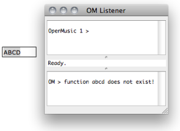

OpenMusic DocumentationHiérarchie de section : OM 6.6 User Manual > Lisp Programming > The Listener
OpenMusic DocumentationHiérarchie de section : OM 6.6 User Manual > Lisp Programming > The Listener
Navigation : page précédente | page suivante
Attention, votre navigateur ne supporte pas le javascript ou celui-ci à été désactivé. Certaines fonctionnalités de ce guide sont restreintes.
The Listener
The Listener Window
The Listener window is the main interface with the Lisp under OM. It can be used for evaluating Lisp expressions or reading results and messages. To open or bring the Listener window to the front, select |
{kind=link}
Listener Window
The OM Listener window is made of two main frames, or "panes".
The input pane – upper part –allows to enter Lisp expressions. These expressions will be evaluated by the Lisp interpreter. They can be either simple variables, calls to Lisp functions, or definitions of new variables or functions. |

|
The output pane – lower part – displays the results returned by the boxes evaluated in OM patches |

|

|
It also prints the results of different processes in OM patches or environment. |
Lisp Files
Use
Lisp files generally have a ".lisp" or ".lsp" extension. They can also be compiled, that is interpreted and converted to optimized binary instructions for a given platform. They will then be loaded in their compiled form.
Loading Files
To load a file that contains Lisp code, select Lisp/Load File.
The Lisp code it contains is evaluated : all the functions and data defined in this file are added to the current Lisp environment, so that they can be used subsequently.
Control of Execution
The Listener is also a fundamental tool for controlling the execution of OM programs.
Abort Command

|
To abort an ongoing evaluation, select the Listener, choose The message displayed in return is often very useful for debugging or understanding the process at stake. |
Additional Information
A small text field located between the two panes displays additional info, such as
|

To get information about an item, type its name and add a space.
|
Références :
Plan :
Navigation : page précédente | page suivante
A propos...(c) Ircam - Centre Pompidou